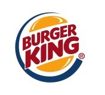

홈 > 브랜드 매거진 > 버거킹
버거킹
버거킹(Burger King)은 1953년 미국 플로리다주 잭슨빌에서 인스타-버거킹으로 출발해 1954년 마이애미에서 본격 운영을 시작한 패스트푸드 체인이다. 시그니처 메뉴 와퍼는 1957년에 만들어졌고, 현재 모회사는 레스토랑 브랜즈 인터내셔널이다.
산업 분야 식음료 · 공개 등급 편집 검수 · 브랜드 평가 4.7 ★

한눈에 보는 브랜드
버거킹(Burger King)은 1953년 7월 미국 플로리다주 잭슨빌에서 인스타-버거킹(Insta-Burger King)으로 출발했으며, 1954년 12월 마이애미에서 제임스 맥라모어와 데이비드 에저턴이 프랜차이즈를 열어 운영을 시작했고 1959년 전국 영업권을 인수해 버거킹으로 상호를 확립했다. 시그니처 메뉴 와퍼(Whopper)는 1957년에 만들어졌으며, 현재 모회사는 2014년부터 레스토랑 브랜즈 인터내셔널(RBI)이다.
시작과 성장
제임스 맥라모어와 데이비드 에드거턴이 1954년 미국 마이애미에서 시작한 퀵 서비스 레스토랑으로 햄버거, 치킨, 프렌치 프라이, 탄산음료, 밀크셰이크, 샐러드, 디저트 등을 제조 · 판매함.
브랜드 아이덴티티
버거킹의 시각 정체성을 상징하는 '번(bun)' 로고는 1969년 두 개의 빵 사이에 굵은 워드마크를 끼워 넣은 형태로 정립되었고, 1994년 빵 색을 보다 선명한 오렌지로 정돈했으며, 1999년에는 빵을 감싸는 파란색 초승달 스우시가 추가되었다. 2021년 버거킹은 디자인 에이전시 존스 놀스 리치(Jones Knowles Ritchie)와 함께 20여 년 만의 전면 리브랜딩을 단행해, 1999년 로고의 파란색을 완전히 제거하고 1970~90년대 스타일에 맞춘 평면·복고풍 번 로고로 회귀했다.
색상은 음식에서 도출한 따뜻한 팔레트를 채택해 머스터드에서 오렌지에 이르는 톤과 짙은 갈색을 기반으로 직화 구이 정체성을 환기했으며, 음식의 둥근 형태에서 영감을 받은 전용 서체 'Flame Sans'가 도입되었다.
제품과 서비스
햄버거, 감자튀김, 청량 음료, 핫도그, 후식, 와퍼, 빅 킹, BK Chicken Fries
현재 상태
버거킹은 2021년 도입한 평면형 복고 번 로고와 Flame Sans 서체 기반 시각 정체성을 현재까지 사용하며, 레스토랑 브랜즈 인터내셔널 산하의 글로벌 패스트푸드 체인으로 운영된다.